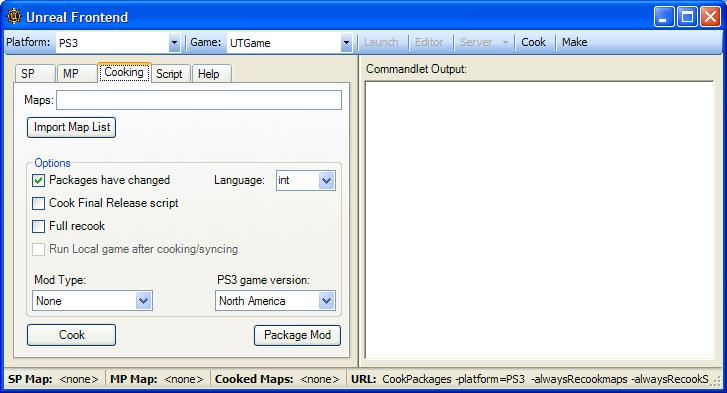
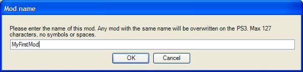
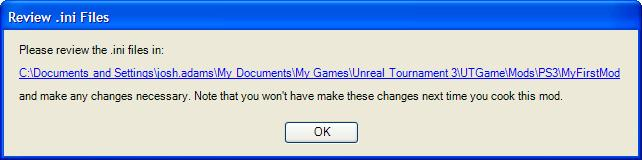
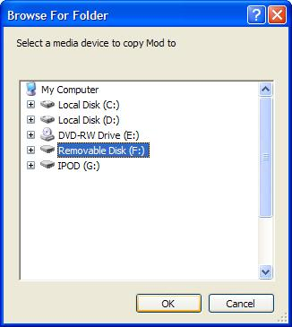

Mod Authoring for the PlayStation 3 Console
Document Summary: Guide to mod authoring for the PlayStation 3.
Document Changelog: Created by Josh Adams; maintained by Richard Nalezynski?.
Installation
- Install Unreal Tournament 3 for Windows
- Download and install the latest UT3 patch here: http://www.epicgames.com/download/UT3Patch2.exe
- Download and install the latest PS3 mod tools for UT3 here: http://udn.epicgames.com/Files/UT3/Mods/PS3ModTools2.1.exe (NOTE: tools are stand alone and do not require previous versions be installed.)
- Select the installation location of Unreal Tournament 3 on your PC (C:\Program Files\Unreal Tournament 3 by default)
- Note that you may need Administrator privileges to write to the installation location
- Make sure you have some type of removable media that you can connect to your PC. The PS3 can accept USB drives (including iPods!), USB thumb drives, SD cards, Memory Sticks, and Compact Flash devices.
Overview
- Mod support for UT3 on PS3 is based on the PC toolset. There are no in-game mod tools that run on the PS3. However, this gives an incredible amount of freedom for people to make whatever they want (within reason, after all the PS3 has a limited amount of memory with no Virtual Memory).
- This document will explain what can be done, how to do it, and how to transfer a mod to the PS3.
- The general pipeline is:
- Create content and/or write script code.
- “Cook” the mod for the PS3 using Unreal Frontend (UFE) tool
- Insert a supported removable media device into your PC
- UFE will copy the mod to a special location on the device
- Bring the device to your PS3 and import it
- Play and test on PS3
What Is Supported
- The following types of mods are supported. See the Not Supported section for any restrictions.
- Maps
- These mods are created and saved with UnrealEd..
- These are new maps that are intended for Epic supplied game types, or for your own game types.
- Mutators
- These mods are programmed with UnrealScript.
- These can be activated optionally during matches. These can range from replacing all weapons to changing gravity in odd ways to affecting player movement.
- These can be auto-downloaded from a server running the new game type without needing to install the mod on the client PS3s. Note that this is just to play as a client; to run a server (or offline) with the mutator, you will need to install the mod the standard way. Auto-downloaded mods are put into a temporary cache only.
- Game types
- These mods are programmed with UnrealScript.
- This is a new set of game rules that use existing maps (see Total Conversions for game types)
- These can be auto-downloaded like a mutator, above.
- Custom Characters
- Character pieces are simply building blocks for the custom character system in UT3
- Total Conversions
- A Total Conversion, or TC, typically means replacing all of the content that shipped with a game with completely unique content, including the main menu.
- On the PS3, the main menu cannot be replaced, but it can be used to load another level that is the TC’s main menu. This can then branch off to load the TC’s maps, etc.
- These are generally a combination of new game types, new models, and new levels.
- Other modifications may work, but these are what we have tested and planned for.
What Is Not Supported
Naturally, given the limited memory on PS3, etc, there are limitations to what you can do.
- Mutators and game types must consist of UnrealScript code only. This means that you cannot have a mutator that turns all UT3 weapons into a space cow model that you import.
- This is because they need to work with shipping maps, and too much content added on will cause the PS3 to run out of memory.
- Importing sounds is not supported. This is because UT3 uses a proprietary version of ATRAC3 and we are unable to release the tool that is needed to convert .wav files to the format required by the game.
- It is unknown if we will be able to have some system for sound conversion in the future.
- We understand the limitation this places on mod developers, and will rectify this if at all possible in a future version.
Mod Creation on PC
- First, familiarize yourself with the Unreal Engine 3 toolset. See the Unreal Developer Network (UDN - http://udn.epicgames.com) for lots of information about the tools.
- This document does not cover using the tools or writing script code. Please see UDN for more information.
- You will create your content for the PS3 just the same as you do for PC (following the above restrictions).
- You will first want to test your mod on the PC version, as the iteration time will be faster. Note that the .ini file creation for the PC mods vs. the PS3 mods are different, and will need to be handled.
- Once you are ready, you can bring your mod from the PC to the PS3.
- See the Mod File Locations for specific information about where files will need to be so the cooking tool can find the packages.
- You will need to run the UnrealFrontend (UFE) tool. It is located in the Binaries directory of the installation location for Unreal Tournament 3.
- The important tab is the Cooking tab:

- Note that this tool is the same tool that is used internally to create the game, so some options may not be needed for making a mod.
Important Properties
- Maps: This is the location you will enter the names of the packages you need to “cook.” This is slightly misnamed because you will put UnrealScript script code packages here when cooking a script-code only mod (ie, mutator). NOTE: For Total Conversion mods, specify the maps, not the script code package that contains the game type. As long as the maps refer to the gametype in the game types array in the world properties, it will cook the script code into the map packages, and work properly.
- Full recook: Cooking happens incrementally, so if it won’t recook stuff that hasn’t changed. However, if you want to cook all packages in the mod, select this to delete all incremental changes. This basically starts the cooking process over from scratch.
- Mod Type: This is where you select the type of mod you are making (see the What Is Supported section above for more information on each type). This is used to generate a configuration (.ini) file from a template. The .ini file is used to integrate the mod into the menus and/or game. Selecting “None” will not create an .ini file, so you will need to manually manage integrating it into the game.
- PS3 game version: Select what version of the PS3 disc you have. The right version is needed so that the game you are running can find the mod on the removable media when importing it.
- Package Mod: This button can be used to put a bunch of files onto the removable media without needing to recook the data. It will bring up a dialog for you to select the files you want, just select the files in a previously cooked mod. Cooked mods will be located in:
- \My Games\Unreal Tournament 3\UTGame\Mods\PS3
Cooking
- To prepare the data, click on the Cook button. This will bring up a dialog asking for the name of your mod. This is very important, and should be unique for each mod. Use the same name when iterating on the same mod.

- When importing a mod on the PS3, it will overwrite any existing mods with the same name (deleting the previous one).
- Then it will run the cooker tool to convert the data into the right format for the PS3. This can be fast or slow depending on the type of mod and its contents (map vs. mutator, for example).
- The first time you cook a mod, it will prompt you to review the .ini files it has generated. (See the Ini Files section below for more information.)

- Finally it will ask you for the location of your removable media:

- Select the drive letter that corresponds to the media. It will always write to the root of the device, so there is no need to browse to a subdirectory of the device. After the copy finishes (there is currently not a proper indication that it is done copying – just look for the utility to be responsive again), remove the removable media, and bring it over to the PS3!
- Note that due to PS3 file import restrictions, you can only have one mod at a time on the removable media. When UFE copies the mod to the media, it will overwrite any existing mod.
Mod Name Information
- The name of the mod is very important. Certain files are named specially based on the name of the mod, and cannot be changed once you choose a name of the mod.
- This also means that you cannot take two mods (in separate directories) and combine them into one. You are able, however, to cook a mutator script package and several maps into the same mod! If you do this, choose one of them as the mod type in UFE, then manually edit the .ini file to include the other information. (See the Ini Files section for more information).
Ini Files
- The game uses .ini files to integrate the mod into the menus and the game. These are very important!
- UFE will copy some templates for generating .ini files. Note that generated .ini files are likely to not be 100% perfect, especially for the code mod types. It is worth understanding the contents of the various .ini types.
- Following is a list of contents of the various mod .ini types with explanations of what’s included, which you may want to modify (explanation text is in italics).
Map mods(PS3-UTGame.ini):
[DM-MyMap UTUIDataProvider_MapInfo] |
| The first line must be your map name followed by UTUIDataProvider_MapInfo, in brackets |
MapName=DM-MyMap |
| Next comes the name of the map package on disk (without the .xxx extension) |
FriendlyName=MyMap |
| The friendly name is what’s shown in the menus |
PreviewImageMarkup=<Images:UI_FrontEnd_Art.GameTypes.DeathMatch> |
| It is possible to load your own images for map preview in the main menu. This is where you would point to your texture. See the Other Ini Functionality section for information on adding extra textures |
Description=This is my first map! |
| Here you can describe the map that is visible in the menus for more information about the map. |
Mutator mods (PS3-UTGame.ini):
[MyMutator UTUIDataProvider_Mutator] |
| Like maps, you need the mutator name followed by UTUIDataProvider_Mutator |
ClassName=MyMutator.MyMutator |
| This is the name of the mutator class that you wrote in script code – PackageName.ClassName. Note that the default value is to use the mod name for packagename and classname, so this likely will need to be updated, depending on how you named your class. |
FriendlyName=MyMutator |
| This is name of the mutator as seen in the mutator list. |
Description=My mutator rocks! |
| You can provide detailed information about your mutator if desired. |
[LoadForAllGameTypes]
Package=MyMutator |
| This is a very important section, as it will allow the mutator to be loaded in the game. By default, the Package is set to the name of the mod, so will likely need to be changed. |
Gametype mods (PS3-UTGame.ini):
[Engine.PackagesToFullyLoadForDLC]
GameType_PreLoadClass=MyGame.MyGame |
| Enter the script package name and gametype class name as PackageName.GameTypeName. This will tell the game to load the below package when the above gametype is played. Note that the default value is to use the mod name for packagename and classname, so this likely will need to be updated, depending on how you named your class. |
Package=MyGame |
| Note that the default value is to use the mod name for packagename |
[MyGame UTUIDataProvider_GameModeInfo]
GameMode=MyGame.MyGame |
| Copy the value from GameType_PreLoadClass, above |
FriendlyName=MyGame |
| Name that is listed in the Game Types menu in the game |
Description=This is my first game type. |
| Detailed description of the game type |
Prefixes=DM |
| Set the prefix that your game type handles for existing or your own maps (DM to use Deathmatch maps, for instance) |
PreviewImageMarkup=<Images:UI_FrontEnd_Art.GameTypes.TeamDeathmatch> |
| It is possible to load your own images for map preview in the main menu. This is where you would point to your texture. See the Other Ini Functionality section for information on adding extra textures. |
Character piece mods (UTCustomChar.ini):
[CustomParts]
CustomParts=(Part=PART_Helmet,ObjectName="MyChars.MyHelmet",PartID="MYCHARSA",FamilyID="IRNM") |
| See part names, below |
- For Part, use one of the following to describe what kind of body part it is:
- PART_Helmet
- PART_Facemask
- PART_Goggles
- PART_Torso
- PART_ShoPad
- PART_Arms
- PART_Thighs
- PART_Boots
- For ObjectName, use the package and object name for the mesh that you have created.
- For PartID, use a unique name
- For FamilyID, use one of the following to choose which body type the part is found in the menus
- IRNF – IronGuard Male
- IRNM – IronGuard Female
- KRAM – Krall Male
- LIAM – Liandri Female
- NECF – Necris Female
- NECM – Necris Male
- TWIF – TwinSouls Female
- TWIM – TwinSouls Male
- NOTE: New heads do not work on the PS3 as they are based on entirely new characters, which are not moddable on the PS3. The best solution is to make a helmet that covers the entire existing head.
Total conversion mods (PS3-UTGame.ini)
- Total conversions are a combination of a Game Type and a Map mod, so you can see the above descriptions for how to change the settings.
- NOTE: For Total Conversion mods, specify the maps, not the script code package that contains the game type. As long as the maps refer to the gametype in the game types array in the world properties, it will cook the script code into the map packages, and work properly.
Miscellaneous info
- Note that you can add more entries in .ini files for things like multiple maps in one .ini file, etc. There are some notes in some of the generated .inis.
Other Ini Functionality (Technical details)
- Only certain ini file sections are supported. When packaging a mod, UFE will validate the .ini files in it to make sure they do not have any illegal sections.
- However, you can modify your .ini file beyond that above, which you may need to do, depending on your mod. The important section to know about is [Engine.PackagesToFullyLoadForDLC]. Note that the terms DLC (DownLoadable Content) and Mods are interchangeable (the only difference is where you get it from – imported by the user vs the Playstation Store).
- The section has the following format:
[Engine.PackagesToFullyLoadForDLC]
MapName=UTFrontend
Package=MyModContent1
Package=MyModContent2
GameType_PreLoadClass=MyGame.MyGame
Package=MyGameContent1
GameType_PostLoadClass=MyGame.MyGame
Package=MyGameContent2
- This will tell the engine to fully load a package for specific needs. This is because the console won’t load single objects out of packages, it will only load entire packages.
- Normally, when a mod is cooked, everything it needs is pulled into the package, but if there is script code that calls DynamicLoadObject or similar, the object won’t be cooked into the package, so you will need to load the entire package before calling DynamicLoadObject.
- The above section can control package loading, based on specific maps or game types.
- For instance, to load a game type mod, the game needs to load the entire script package that contains the game type before it can use the game type object as the game type.
- One very interesting use of this is with the MapName=UTFrontend. If you want to have an icon/preview picture for your map, you will need put the name of the texture object in the PreviewImage line in the .ini file, but you will need to fully load the package first! By using the MapName=UTFrontend in your .ini, it will guarantee that the package containing your texture is loaded while the main menu (UTFrontend) is loaded. Then the texture can be found.
- You will want to put your texture in the UI LOD group, and cook the package containing the texture using the UFE cooker (in the Maps line).
Importing on PS3
- After UFE has copied the mod to the removable media device, simply insert the removable media into your PS3.
- In the Main Menu, go to the Community section. Then select My Content. This will show a list of installed mods. Press Square to bring up the import dialog. This standard PS3 dialog will allow you to select a device to import from.
- Select the device, select Yes to import it, then wait while the mod is first copied to the PS3 Hard Drive, and then unpacked. The time this takes will depend the size and type of the mod.
- For all mod types except character pieces, the new items can be found on the appropriate menus. For instance, for a new Deathmatch map, go to Instant Action, select Deathmatch, and your map will be there.
- For character pieces, you will need to quit the game to the XMB/System Software, and run the game again.
Mod File Locations and other details
- For the following, refers to “My Documents\My Games”
- Script Code:
- When compiling script code, you put your script files in:
<UserDirectory>\UTGame\Src\<ScriptPackageName>\Classes
-
- To register the package with the engine, edit:
<UserDirectory>\UTGame\Config\UTEditor.ini
-
- Create a section called [ModPackages] if it doesn’t already exist, then add:
ModPackages=<ScriptPackageName>
-
- You will want one ModPackages line for each script package you create
- To compile, use UFE (the Script tab Compile Scripts button, or Make on the toolbar), or run the following from the Binaries directory on the commandline:
- Maps:
- When you save the map in the editor, it should be saved to:
<UserDirectory>\UTGame\Unpublished\CookedPC\CustomMaps
- Custom character pieces:
- When you save the package in the editor, it should be saved to:
<UserDirectory>\UTGame\Unpublished\CookedPC\CustomChars
-
- You MUST mark the custom character packages as not downloadable. To do this, run the following commandline from the Binaries directory in your installed game directory:
UT3 setpackageflags ..\UTGame\CookedPC\CustomChars\<charmodname>.upk serversideonly=TRUE
-
- You will only need to do this one time for each package you create.
Sharing Your Work With Others
- Once you are ready, you may want to share your mod with others so that you can play the mod online.
- For code-only mods, clients connecting to the server will be able to have the code downloaded to the client’s PS3 hard drive. This won’t install it fully, so that client won’t be able to use the mod themselves, but it will allow clients to connect without downloading the mod.
- For content mods, the client will need to get the mod installed to their PS3 before they can join the server running the mod (UT3 doesn’t support downloading such large files as maps).
- To share your mod with others, you can simply copy the PS3 directory from the removable media to your PC hard drive, archive it, and then upload it to a location where it can be downloaded by others.
- Then, other people can just download the archive, decompress it to some form of removable media, and then install it on the PS3 in the standard way.
Important!
You are viewing documentation for the Unreal Development Kit (UDK).
If you are looking for the Unreal Engine 4 documentation, please visit the Unreal Engine 4 Documentation site.